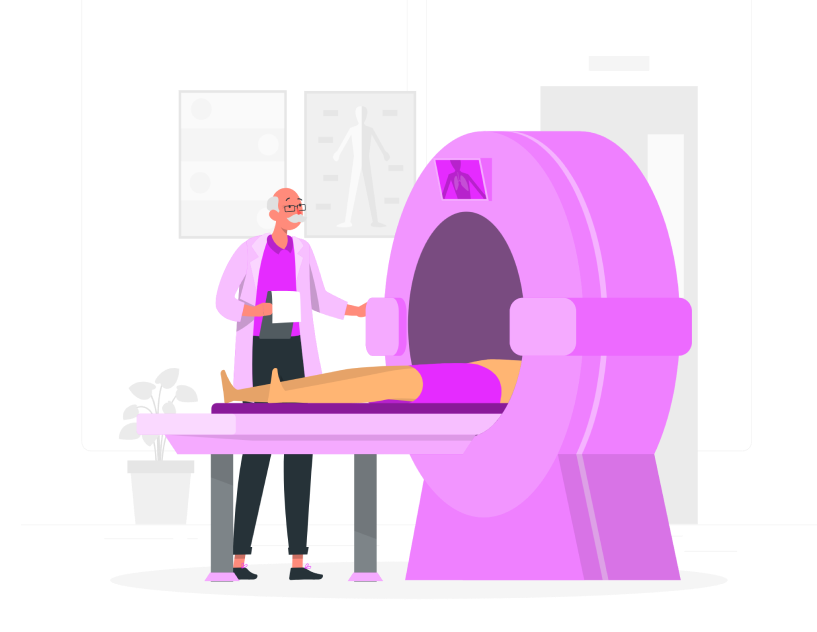

Outubro Rosa
Outubro Rosa é um movimento internacional de conscientização para o controle do câncer de mama, criado no início da década de 1990 pela fundação. A data tem o objetivo de compartilhar informações e promover a conscientização sobre a doença.
Sintomas e Tratamentos
Sintomas
Os sintomas podem ser reconhecido pela pessoa, ou por um médico, dentre alguns, existem: Os sintomas do câncer de mama incluem um nódulo na mama; secreção com sangue pelo mamilo e mudanças na forma ou textura do mamilo ou da mama. As pessoas podem ter: Nas mamas: desconforto, mamilo dolorido, mamilo invertido, nódulos ou secreção mamilar sanguinolenta Também é comum: fadiga relacionada ao câncer, inchaço dos gânglios ou perda de peso
Tratamentos
O tratamento vai depender do estágio da doença, podendo ser:
→ Cirurgia
→ Radioterapia
→ Quimioterapia
→ Medicamentos
→ Modulador Estrogênico
Hospitais Referência
Confira abaixo a lista de hospitais que possuem centros de referência para tratamento de câncer via SUS:
→ Centro de Referência da Saúde da Mulher(Hospital Pérola Byington);
→ Conjunto Hospitalar do Mandaqui;
→ Hospital do Câncer A.C Camargo;
→ Hospital Central da Santa Casa de São Paulo;
→ Hospital de Clínicas da Faculdade de Medicina da USP;
→ Hospital Geral de Vila Nova Cachoeirinha;
→ Hospital Heliópolis;
→ Hospital Ipiranga;
Existem algumas campanhas que recebem doações de cabelos de mulheres, homens, crianças, para fazer perucas com o intuito de aumentar a autoestima de mulheres que passam pelo tratamento de quimioterapia. Dentre algumas campanhas existem:
→ ONG Rapunzel Solidária;
→ Cabelegria;
→ Cabelo amigo;
→ Tesoura sem ponta;
→ Rede Feminina de Combate ao Câncer;